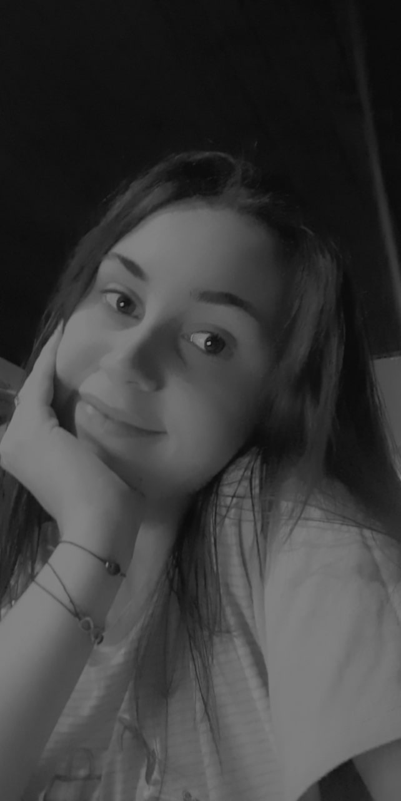

Ja sam Ivana Drnić. Imam 19 godina. Studentica sam 1 godine Grafičkog fakulteta u Zagrebu. Za sebe kažem da sam vrlo ambiciozna osoba koja uvijek želi nešto bolje za svoj život, ali u istom uvijek je spremna pomoći drugima ako treba. Neki od mojih interesa su volontiranje i životinje. Uvijek sam spremna za dodatan rad ako je u pitanju humanitarni rad bilo to s ljudima ili životinjama.
